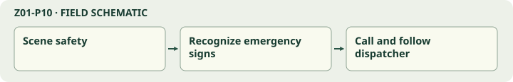

Z01-P10 · Survival fundamentals
Recognize the moment to call for help
Recognize emergency signs and transfer clear information to EMS.
When it applies · Lay responder at a sudden injury or illness in the United States.
Equipment · Phone or emergency communicator and first-aid equipment as available.

Actions
- Look for ongoing danger before approaching. Observe responsiveness, breathing and life-threatening bleeding.[T01]
- Call 911 for unresponsiveness, abnormal breathing or life-threatening bleeding. Give the exact location and describe what you see in plain language.[T02, T06]
- Follow the dispatcher and work within your training. If someone else is available, assign them to communicate and guide responders.[T02, ED]
Verify · State the emergency, location and access route. Confirm which person is calling.[T02, T06, ED]
Stop or change course · If the scene is unsafe, keep clear and give responders the hazard details.[T01, T02]
Evidence and editorial notes
- T01 · American Red Cross · First Aid Steps
- First Aid Steps > Check the scene; check the person · Lay responder in United States; assess safety before contact
Check scene safety, responsiveness, breathing and immediately life-threatening conditions.
Primary source · checked 2026-11-24 - T02 · American Red Cross · First Aid Steps
- First Aid Steps > Call 9-1-1 · Lay emergency response to unresponsiveness, abnormal breathing or severe bleeding
Activate EMS and get needed equipment. Follow dispatcher directions and act within training.
Primary source · checked 2026-11-24 - T06 · NPS · Outdoor Emergency Plan
- If you get lost or hurt; call for help · Outdoor US emergency
Communicate location, last known point, situation and needs. Stay put when unable to establish a safe route unless immediate danger requires movement.
Primary source · checked 2026-11-24
Source lineage · American Red Cross first aid; new manuscript.